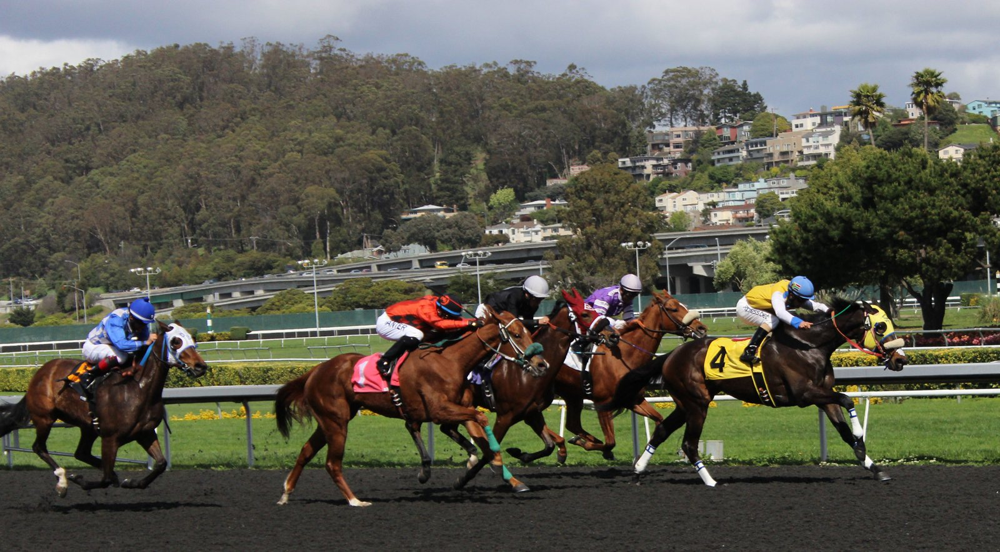

Kind Of Blue vuelve a Ascot con los pies en el suelo frente a Almeraq
El equipo de Kind Of Blue, ganador del British Champions Sprint en 2024, afronta el sábado este Grupo I de Ascot asumiendo que Almeraq es el rival a batir.

"Probablemente necesitamos que corra por debajo de su nivel para ganar la carrera". Tom Fanshawe, preparador asistente, resume así cómo encara el equipo el Qatar Racing British Champions Sprint. La frase no se refiere a su caballo, sino a Almeraq, el favorito, al que define como "un velocista que destaca ahora mismo".
La temporada explica esa cautela. Kind Of Blue ha perdido dos veces con claridad ante Almeraq: en junio, en el Queen Elizabeth II Jubilee Stakes, sobre el mismo recorrido de Ascot, y el mes pasado en el Betfair Sprint Cup de Haydock.
El equipo, que se declara "bastante realista", no da la carrera por perdida. "Creo que lo tenemos en mejor forma que antes de Haydock", explicó Fanshawe. Su argumento es el calendario: Kind Of Blue ha corrido algo menos que su rival a estas alturas de la temporada. Confían en presentar "el caballo un poco más fresco" y con más confianza que en Haydock. Si Almeraq repite lo que hizo allí, admitió, "va a ser muy difícil de batir".
La última salida alimenta el optimismo. En Kempton, el caballo de cinco años se impuso en una carrera de condiciones por delante de Mithaaby y Montassib. "Ha salido de Kempton en muy buen estado, se mueve bien y se le ve despierto", detalló Fanshawe. "Parecía que estaba recuperando su mejor nivel. Si miras las valoraciones de los participantes, era una carrera de Grupo".
Más que el resultado, al equipo le quedó la forma de correr: "Lo que más llamó la atención fue cómo viajó durante la carrera".
Kind Of Blue ya sabe lo que es ganar este Grupo I. El sábado vuelve a intentarlo con una idea que Fanshawe dejó clara: "En esta época del año, en Ascot, puede pasar cualquier cosa".
Por Martín Larrañeta